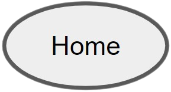
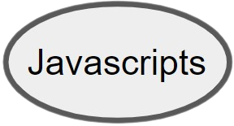
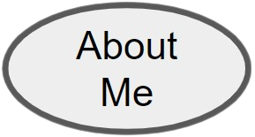
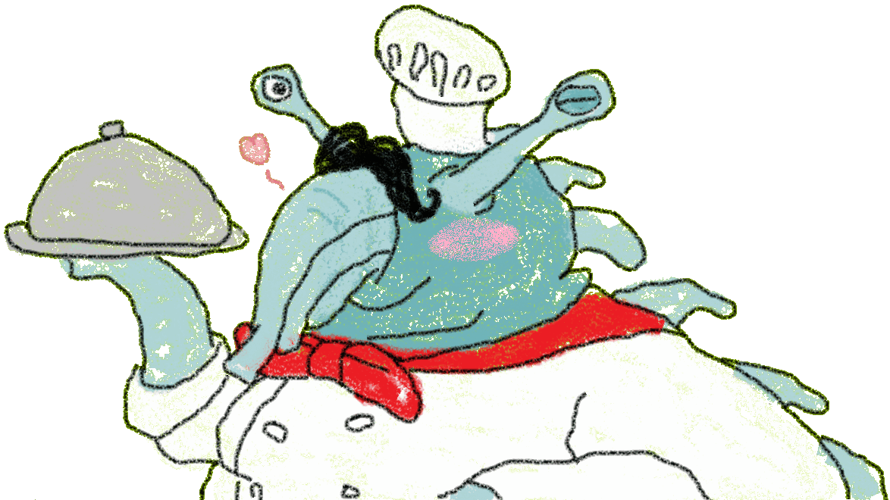
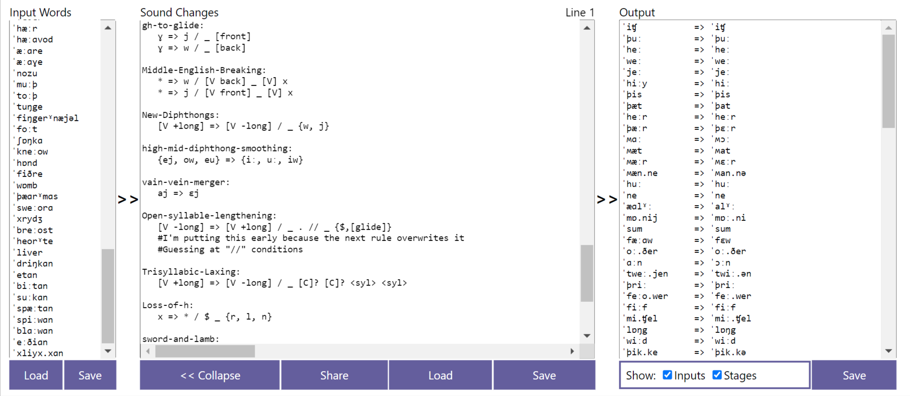

|  |  |  |
I'm a Junior here at URI in the Anthropology program. I'm from Salem, New Hampshire. One of my favorite topics is linguistics and as a hobby, I make constructed languages. But I also like learning about and working with etymology and diachronics. In fact, I'm working on a project right now that takes words from English's past and evolves them into their modern English counterparts (or what they would be if they had a modern descendant). My hope is to eventually have a program that takes a word from any major Indo-European language and simulates what it would be if it had a cognate in any other Indo-European language.
The animated GIF you see on the left is from a project that I worked on over the summer for a cursed conlang competition. My constructed language (or conlang) is a language entirely expressed through fart sounds.
